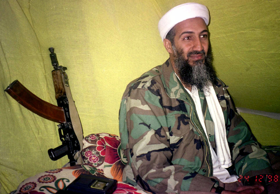
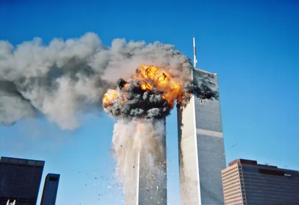
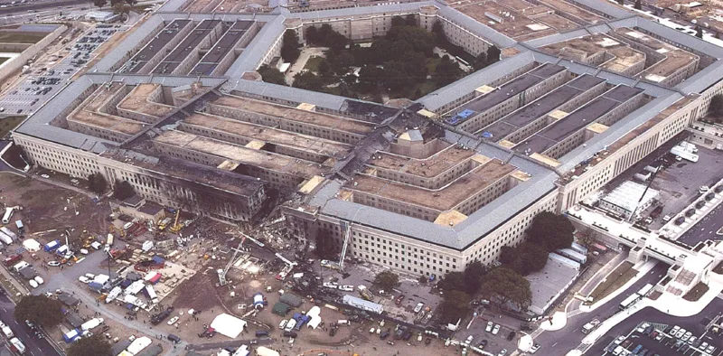
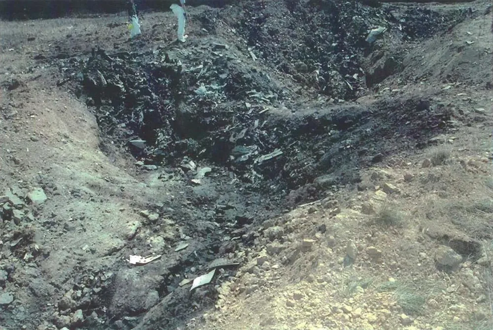

September 11 Attack
September 11th, 2001
UAL175 etc.
From Boston etc.
To Los Angeles etc.
outline
사건명
9.11 테러
납치 항공편
유나이티드 항공 175편 등 4대
출발지
보스턴, 워싱턴 등
목적지
로스엔젤레스, 샌프란시스코
사건 발생지
세계무역센터, 펜타곤 등
범인
알카에다, 오사마 빈 라덴
info
2001년 9월 11일, 미국 내 국내선 여객기 4대가 알카에다

1988년에 오사마 빈 라덴을 수장으로 설립된 수니파 이슬람 극단주의 테러 조직이다.
주도의 테러리스트들에게 하이재킹된다. 하이재킹의 목적은 미국의 주요 건물에 충돌시키는 방식으로 테러를 일으켜 미국의 시스템을 마비시키는 것이었다. 특히 미국의 경제, 안보, 행정을 상징하는 세 건물을 타깃으로 지정했다. 경제를 상징하는 건물은 세계무역센터

미국 뉴욕시 맨해튼의 다운타운 중심에 있었던 초대형 비즈니스 센터 마천루이다. 쌍둥이 빌딩이라는 별칭으로 잘 알려져있다.
였다. 아메리칸 항공 11편이 북쪽 타워에, 유나이티드 항공 175편이 남쪽 타워에 충돌했다. 미국 맨해튼 한복판 가장 상징적인 건물이 비행기 충돌로 인해 순식간에 무너졌고 결국 세계무역센터는 모두 붕괴되었다. 둘째로 미국의 군사력과 안보를 상징하는 건물은 미국의 펜타곤

미국 국방부 본부 청사로, 이름은 오각형이라는 뜻이다. 이는 위에서 바라본 청사의 모양에서 유래했다.
이다. 아메리칸 항공 77편이 하이재킹되었고 펜타곤에 정면 충돌하였다. 세 번째 타켓은 미국의 행정을 상징하는 백악관 또는 미국 국회의사당으로 추정된다. 이 공격을 위해 납치된 유나이티드 항공 93편은 승객들의 저항으로 펜실베이니아주의 한 광산

유동체가 산산조각 나고 전 탑승 인원의 시신 수습조차 힘들 정도의 끔찍한 죽음을 맞이하는 비극으로 사태가 끝났다
에 추락했다. 협상이나 요구가 목적이 아닌 하나의 무기로서 비행기를 하이재킹하여 미국의 심장을 공격한 전례 없는 테러 사건이다.

1988년에 오사마 빈 라덴을 수장으로 설립된 수니파 이슬람 극단주의 테러 조직이다.

미국 뉴욕시 맨해튼의 다운타운 중심에 있었던 초대형 비즈니스 센터 마천루이다. 쌍둥이 빌딩이라는 별칭으로 잘 알려져있다.

미국 국방부 본부 청사로, 이름은 오각형이라는 뜻이다. 이는 위에서 바라본 청사의 모양에서 유래했다.

유동체가 산산조각 나고 전 탑승 인원의 시신 수습조차 힘들 정도의 끔찍한 죽음을 맞이하는 비극으로 사태가 끝났다